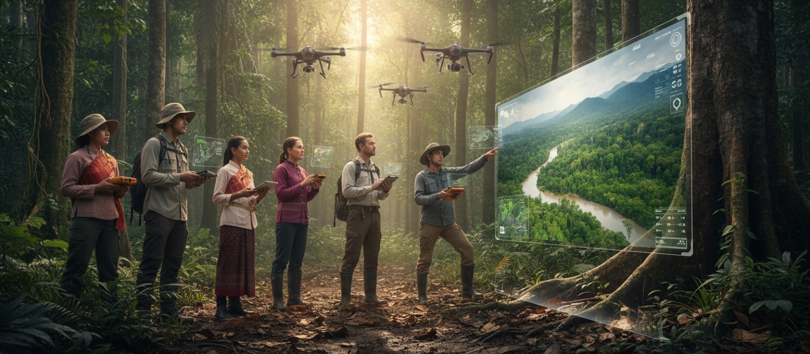
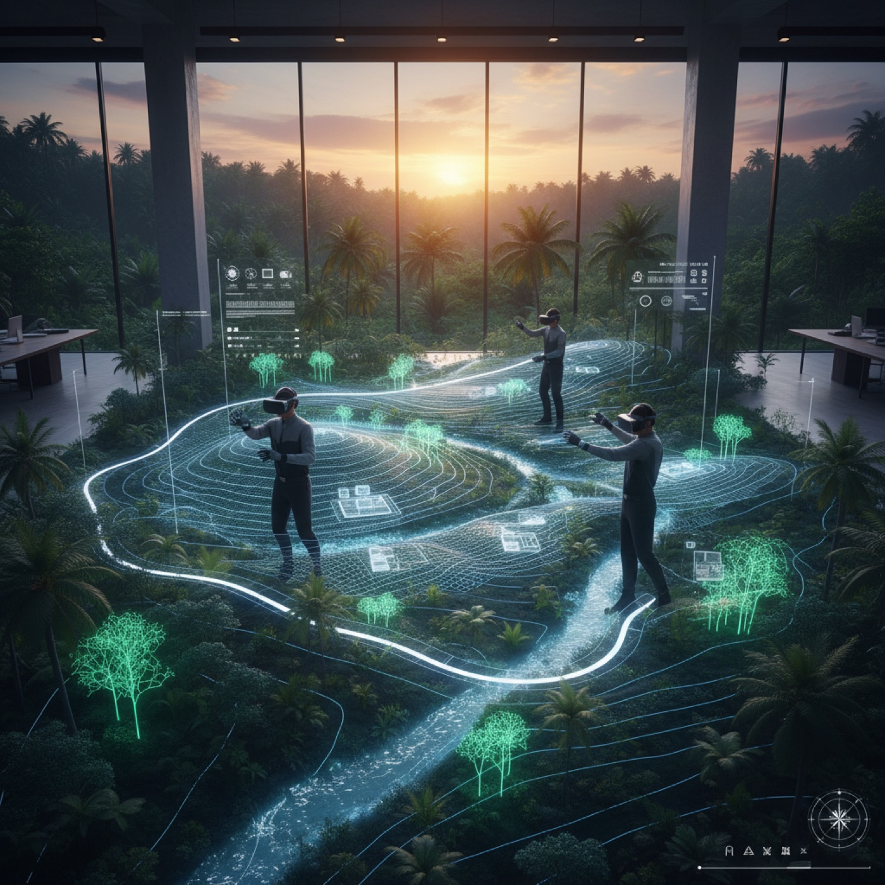

The Digital Museum
An experimental 3D environment that reimagines how we preserve and experience cultural artifacts — a curated virtual space where heritage, art, mythology and technology meet.
Real artifacts, sculptures, environments and cultural objects are transformed into immersive digital experiences. This is not a traditional museum — it is a way of preserving, exploring and presenting history through 3D environments, digital storytelling and interactive space.

Beyond physical walls
Culture that exists anywhere
Many artifacts and cultural objects are fragile, inaccessible or limited to a single location. The Digital Museum creates a bridge between preservation and accessibility by letting collections exist in a virtual environment.
Visitors explore objects, spaces and stories from anywhere in the world. Digital preservation makes culture more resilient, more shareable and more immersive.
How it works
From real object to virtual exhibition
- 01
Artifact digitisation
Sculptures, statues, archaeological pieces and historical items scanned with LiDAR, photogrammetry and high-resolution reconstruction.
- 02
Immersive 3D environments
Artifacts placed inside curated digital spaces designed for exploration, storytelling and emotional experience.
- 03
Virtual exhibitions
Collections presented as interactive online museums, digital galleries and immersive exhibition spaces.
- 04
Cultural storytelling
Visual atmosphere, historical context and artistic presentation combined into experiences beyond documentation.
Collaborate
Have a collection or a heritage site?
We are looking for partners in cultural preservation. Tell us about the objects or the place you want to keep.